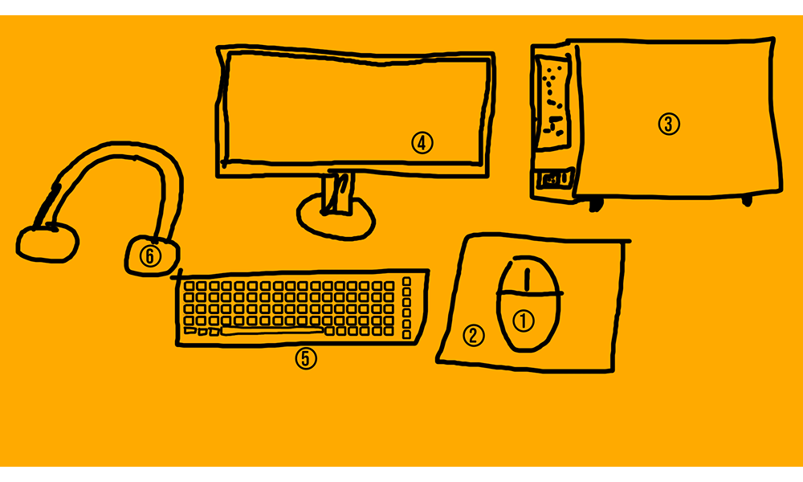

Tehnika pildikaart

Arvutihiir ehk hiir on arvuti riistvaraline osutusseade. Hiirt kasutades saab paljud käsud arvutile edastada ilma täiendavate tööriistadeta, väheneb klaviatuuri kasutamise vajadus, kuid see ei kao täielikult.
Tagasi